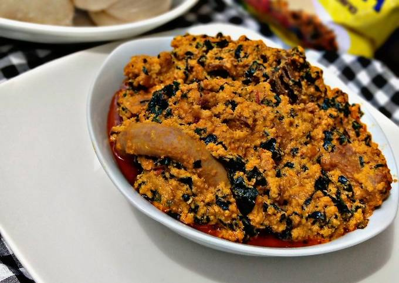

Egusi Soup

Egusi soup a southern part of Nigerian igbo soup
Ingredients
- Egusi
- Crayfish
- Assorted meat
- 2 Stock fish
- 2 Dry fish
- Scotch bonnet
- 1 large onion bulb
- Black pepper
- 2 Calabar nutmeg
- 4 Seasoning cubes
- 1/2 tsp Salt
- Palm oil
- Beef seasoning
- Dry ginger or fresh ginger
- 3 garlic clove
- 2 cups water
Steps
- Assemble your ingredients.
- Soak the stock fish in hot water for 20min
-
Wash your meats and place in pot and add blended scotch bonnet mixture
-
Add the stock fish and coarsely grounded black pepper, ginger and nutmeg
- Add salt
- Beef seasoning
- Seasoning cubes
- Slice onions
- Add water enough to cover the meat.
- Ground your crashfish and mix with the egusi
- Mix till combined
-
Add your palm oil to the egusi. Mix and set aside till your meat is soft
- Now scoop the mixture into the your meat
-
Cook till oil appears on the surface. Adjust seasoning to taste
-
Now add your ugwu leaves. Wash it with salt and drain before adding
-
Tadaa! It's ready. Typically igbo style. You should try it really.
Note
- This egusi soup is healthier because the oil is cooked and not fried